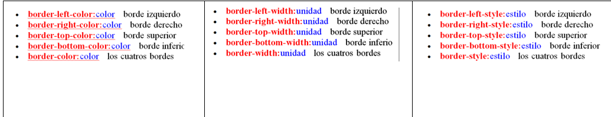

CSS3 ESTILOS INTERNOS Y EXTERNOS SELECTORES CSS
.png)
CSS3 ESTILOS INTERNOS Y EXTERNOS SELECTORES CSS |
|
CONCEPTOSConceptos2¿QUE ES CSS
¿PARA QUE SIRVE CSS3? ¿CUALES SON SUS PRINCIPALES USOS?CSS3 sirve para cambiar el aspecto de un sitio web, desde las medidas para los márgenes hasta las especificaciones para las imágenes y el texto. CSS3 funciona mediante módulos, algunos de los más comunes son “colors”, “fonts”, “backgrounds”. Los módulos son sólo categorías en las que se pueden dividir las modificaciones que hacemos al aspecto de nuestro sitio web.Aqui tenemos algunos ejemplos-Los Márgenes de bloque son el espacio comprendido entre el bloque y el borde de la ventana activa del navegador. Se controla con el atributo margin -Los Bordes de bloque, sin aplicar estilos, no son visibles, y es como un cuadro imaginario que envuelve todo el contenido del bloque. Su atributo de control es border. -Espaciado interno del bloque es la distancia entre el borde del bloque y su contenido. Es el atributo padding (en inglés significa algo así como "acolchado") -El Estilo y color de los bordes, son evidentes: son las líneas que delimitan el bloque, que pueden dibujarse de varias formas en cuanto a tipo de trazo, grosor y color. Estos dos atributos también pueden actuar sobre los bordes de otros elementos contenidos dentro de un bloque, como formularios, tablas, gráficos, etc. -El Color del fondo se controla con las mismas instrucciones que las de la página HTML: background. Los parámetros de color, al igual que en HTML, se pueden escribir con su nombre (en inglés) o con la notación RGB en hexadecimal. -El Tamaño son las dimensiones del bloque. Si no se indican dimensiones, por defecto, el bloque ocupará todo el ancho de la ventana, y de alto lo que su contenido precise. Se utilizan dos atributos para controlarlo: width para el ancho y height para el alto. Declaracion font
BORDES DE UN BLOQUECon css se pueden definir los bordes de un bloque, que por defecto son invisibles. Por tanto, lo primero que hay que definir es el estilo del borde. Además del estilo, se puede definir su color y grosor, y todo ello puede hacerse globalmente, sobre los cuatro lados del bloque, o cada uno por separado.fuentes blibliograficas usadas - https://medium.com/sngular-devs/combinadores-en-css-bf117a8c91f5 - https://www.w3.org/Style/Examples/011/firstcss.es.html - https://developer.mozilla.org/es/docs/Learn/Getting_started_with_the_web/CSS_basics |